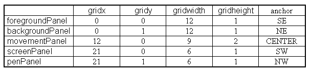

The SemiDirectTuttleInterface class is responsible for supplying the collection of TuttleButtons, shown at the bottom of Figure 5.4, and also for dispatching events generated by the user's interactions with the buttons to its listener object. It contains only a constructor action and so a class diagram will not be presented.
The layout managers which have been introduced in the previous chapters are not sufficiently sophisticated for the layouts which are required in the SemiDirectTuttleInterface. In order to produce the required groupings the GridBagLayout layout manager has to be used. This is the most complex of the Java AWT layout managers and only a brief introduction to its full capabilities will be given here; further details can be obtained from the AWT documentation.
The basis of using a GridBagLayout layout manager is to imagine the area which will be occupied by a collection of components divided in a grid containing an arbitrary number of columns and rows. Figure 5.6 shows the panel upon which the four movement buttons were laid out, with a suitable grid superimposed.
Figure 5.6 Grid used to layout the Tuttle movement buttons.
The top left cell of all grids must have the co-ordinates (0, 0) but the grid can contain any number of rows and columns. A component can then be placed onto the grid by specifying the cell where its top left corner should appear and the width and height it should occupy, in cells. So the backward movement button is located in cell ( 1, 2) and has a width of 1 cell and a height of 2 cells. This information, known as constraints, is summarised for all four TuttleButtons in Table 5.2.
Table 5.2 Layout constraints for the Tuttle movementPanel.
To apply these constraints an instance of the GridBagConstraints class has to be constructed, configured and communicated to the GridBagLayout instance which has been specified as the Panel's layout manager. This will be described in detail below when these four TuttleButtons are constructed and added to their Panel in the SemiDirectTuttleInterface constructor, which commences as follows.
0018 public SemiDirectTuttleInterface( Applet itsApplet) {
0019
0020 ActionListener sendToHere = (ActionListener) itsApplet;
0021
0022 Panel foreGroundPanel = new Panel();
0023 Panel backGroundPanel = new Panel();
0024 Panel screenPanel = new Panel();
0025 Panel penPanel = new Panel();
0026 Panel movementPanel = new Panel();
0027
0028 GridBagLayout tuttleLayout = new GridBagLayout();
0029 GridBagLayout movementLayout = new GridBagLayout();
0030 GridBagConstraints constraints = new GridBagConstraints();
0031
0032
0033 TuttleButton goForward;
0034 TuttleButton goBackward;
0035 TuttleButton turnLeft;
0036 TuttleButton turnRight;
---- Other TuttleButton declarations omitted.
The constructor requires as an argument the identity of the Applet which implements the ActionListener interface to which it is to send the ActionEvents generated by its TuttleButtons. This identity is established, for convenience, on line 0020 as both the identity of the Applet and of its ActionListener are required for the construction of the TuttleButtons and a single cast here prevents multiple casts later.
The five Panels, declared and constructed on lines 0022 to 0026, are used to mount the five groups of TuttleButtons, in order to implement the groupings as described above. The SemiDirectTuttleInterface itself and the movementPanel require a GidbagLayout policy and two suitably named instances of the GridBagLayout class are declared and constructed on lines 0028 and 0029 to provide these and an instance of the GridBagConstraints class, called constraints, is declared and constructed on line 0030. The 21 TuttleButtons are then declared on lines 0033 to 0054.
Following these declarations, the movementPanel is prepared as follows. The first step, on line 0059, is to set the layout policy of the movementPanel to GridBagLayout by passing the GridBagLayout instance movementLayout as an argument to its setLayout() action.
0059 movementPanel.setLayout( movementLayout);
When the Components contained within the movementPanel are laid out, during layout negotiations, the Constraints associated with each Component are consulted to determine where it should be positioned. For this to be accomplished each TuttleButton in turn is constructed, has its actionCommand and actionListener attributes set, and then is added to the movementPanel after its Constraints are associated with it by a call of the movementLayout setConstraints() action. The first TuttleButton to be prepared is the turnLeft button, as follows.
0061 turnLeft = new TuttleButton( "greyltutt.gif", itsApplet); 0062 turnLeft.setActionCommand( "Turn left"); 0063 turnLeft.addActionListener( sendToHere); 0064 constraints.gridx = 0; 0065 constraints.gridy = 1; 0066 constraints.gridwidth = 1; 0067 constraints.gridheight = 2; 0068 movementLayout.setConstraints( turnLeft, constraints); 0069 movementPanel.add( turnLeft);
On line 0061 the TuttleButton is constructed specifying as arguments the image which it is to display and the identity of itsApplet which is required to obtain the Image for its button, as described above. On lines 0062 and 0063, its actionCommand and actionListener attributes are specified, the latter of which specifies as its argument the ActionListener cast value, sendToHere, of itsApplet. Lines 0064 to 0067 set the public attributes of the constraints object to those shown in Table 5.2, as required by the turnLeft TuttleButton. Line 0068 associates these constraints with the turnLeft button within the movementLayout GridBagLayout instance, by calling its setConstraints() action, Finally, on line 0069, the turnLeft TuttleButton is added to the movementPanel. Each of the other three TuttleButtons on the movementPanel are prepared and added in a similar way, specifying the appropriate constraints from Table 5.2.
The other four Panels; foreGroundPanel, backGroundPanel, screenPanel and penPanel, use their default FlowLayout policy as their TuttleButtons are constructed, configured and added to them. For example the penPanel is prepared as follows.
0118 penUpButton = new TuttleButton( "penup.gif", itsApplet); 0119 penUpButton.setActionCommand( "Penup"); 0120 penUpButton.addActionListener( sendToHere); 0121 penPanel.add( penUpButton); 0122 0123 penDownButton = new TuttleButton( "pendown.gif", itsApplet); 0124 penDownButton.setActionCommand( "Pendown"); 0125 penDownButton.addActionListener( sendToHere); 0126 penPanel.add( penDownButton);
All five Panels, the four described in the paragraph above and the movementPanel, are also subject to a GridBagLayout policy in order to produce the required positionings. The grid which is required to lay out the Panels is illustrated in Figure 5.7 and the layout attributes derived are listed in Table 5.3.
Figure 5.7 Grid used to layout the TuttleControl Panels.

Table 5.3 Layout constraints for the tuttleControlPanel.
The widths of the Panels were derived from the consideration that each of the small buttons is two thirds of the width of each of the large buttons. Thus the panels have a width ratio of 6, 4 and 3 which has been doubled to produce the integer ratio 12, 9 and 6. The anchor attribute is used by the layout manager to decide what to do when the space allocated to the component is larger than it required. For example if the area allocated to the foregroundPanel is larger than it requires it will be positioned in the lower right (SOUTHEAST) of the area. The anchor values were chosen so as to preserve the functional and aesthetic properties of the interface under these circumstances. The part of the init() action responsible for positioning the penPanel is as follows.
0233 constraints.gridx = 21; 0234 constraints.gridy = 1; 0235 constraints.gridwidth = 6; 0236 constraints.gridheight = 1; 0237 constraints.anchor = GridBagConstraints.NORTHWEST; 0238 tuttleLayout.setConstraints( penPanel, constraints); 0239 this.add( penPanel); 0240 } // End SemiDirectTuttleInterface constructor.
The tuttleLayout GridbagLayout instance has been specified as the layout manager of the SemiDirectTuttleInterface and so when it is informed, on line 0238, of the constraints to be applied to the penPanel it is ready to use this information in layout negotiations after the penPanel has been added to it, on line 0239.
All the data attributes of the GridBagConstraints class, and the effect which they have on the layout of the components, are summarised in Table 5.4. Additional details can be found in the API documentation.
Table 5.4 Attributes of the GridBagConstraints class.